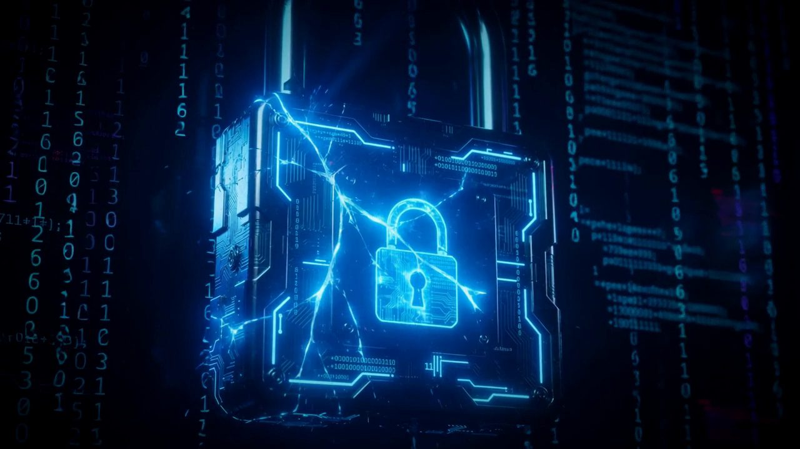

The scare is everywhere right now. Here's what's true in it, what's already law — and the finished tool that answers it.

You've seen the videos. A quantum computer big enough to run Shor's algorithm will crack the encryption the whole world runs on — every password, every bank transfer, every secret locked with RSA or ECC. Millions of views, and the comments are all fear.
Here's the part that's true: the math is real. The day a quantum computer breaks encryption isn't science fiction anymore — it's a planning problem with dates attached.
It gets worse before it gets better. Anything encrypted today can be recorded today and read later, the day the machines are ready. They call it harvest now, decrypt later. If your data has to stay secret for ten years or more, your exposure didn't start in the future. It started already.
Here's the part the scare leaves out: the deadlines are already law.
So the question was never really if. The question is the one nobody can answer off the top of their head: what cryptography do we actually run — and when must each piece change? Done by hand, that's months of manual inventory work, crawling code, certificates, firmware, and libraries one by one. Most outfits never finish it. Some never start.
Fear isn't a plan. Q-Day Ledger is. Q-Day Ledger, our post-quantum cryptography migration assessment tool, starts where every real migration starts: a complete cryptographic inventory (CBOM) of what you actually run.
What the defense does:
And it is local-first, by design. Plain Python, zero third-party dependencies. No account, no cloud, no telemetry. Your code never leaves your machine — private keys are recorded by type and size only; key material is never read. For a tool whose job is to inventory your most sensitive systems, that is not a feature bullet. It is the product.
One more thing separates us from the scare channels: we work in this. We're not a studio explaining machines we've never touched. We run our own numbers on IBM quantum computers — 127 jobs, and every receipt is published, hits and misses both. Read our quantum press release: a J-Dawgs AI agent's first run on real quantum hardware, receipts and all. The shipped product's full proof run is public too: the complete 37-asset demo inventory, the plan, the CBOM, the misses and all. Read the Q-Day Ledger proof run — every output, hits and misses before you believe a word of this page.
We also cut the whole argument into 63 seconds. The commercial is up on our tech channel, AI in Plain Words (@JDawgsQuantumLab) — and the flyer version is right here. Take it, share it, pin it wherever the scare is spreading.
Cyber Monday — half price through Monday, November 30, 2026. One-time payment. No subscription, no per-seat metering.
Single-Organization $749.50 (was $1,499) · Multi-Site $2,499.50 (was $4,999) · Auditor / Consultant $3,749.50 (was $7,499).
Free sample CBOM pack on the product page — see a real one before you spend a dime. Prefer a storefront? Q-Day Ledger is also on Gumroad, with the same fix-it guarantee behind it.
The scare is free. The defense is ready.